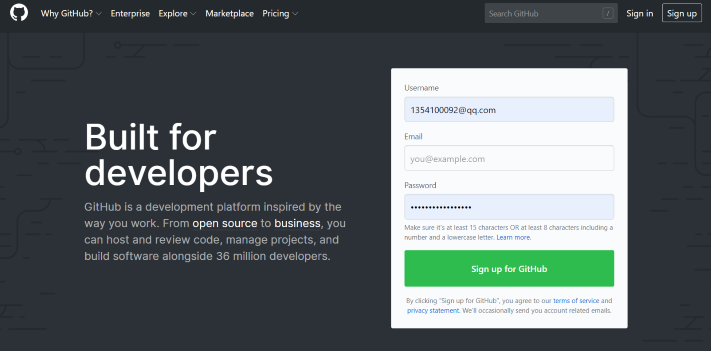
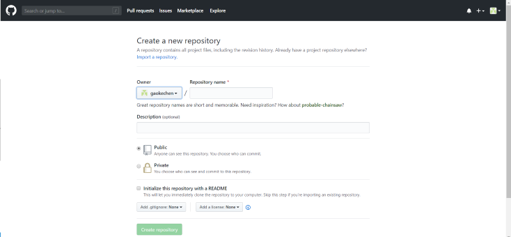
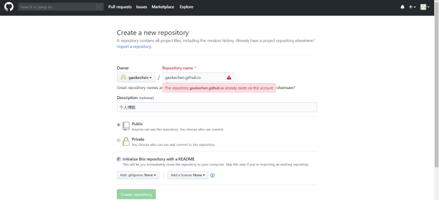
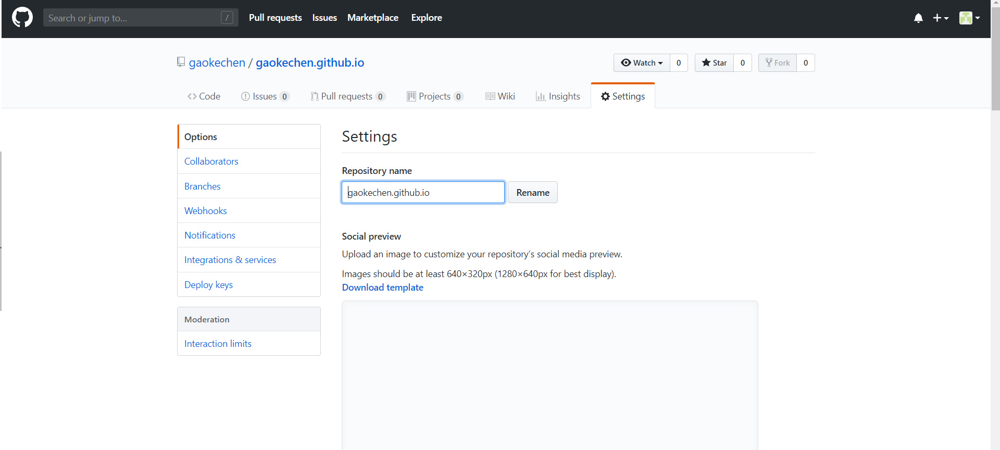

如何动手搭建个人博客，比较复杂的方法是买一个云服务器再买一个域名还需要备案，这种方法费用较高。 其实每个GitHub账户都可以开一个自己的静态网站(域名:username.github.io)非常简单且完全免费。 虽然静态网站有一些功能上的限制，但是依然足够我们实现个人博客的全部内容。
第一步：注册一个GitHub账户
首先打开https://github.com注册一个GitHub账号，注册成功后就可以登录。
第二步：创建一个新的仓库（repository）
如图所示新建一个仓库
第三步：填写博客域名（username.github.io)
按照图片示例给自己的博客填写一个域名,由于我已经创建了gaokechen.github.io因此会提示无法创建
第四步：创建完成后的设置
在创建完成GitHub pages仓库后点击setting可以对仓库进行设置例如修改域名等。
至此我们就完成了GitHub pages个人博客的创建工作了，接下来就可以进行页面的设计和文章的添加了。